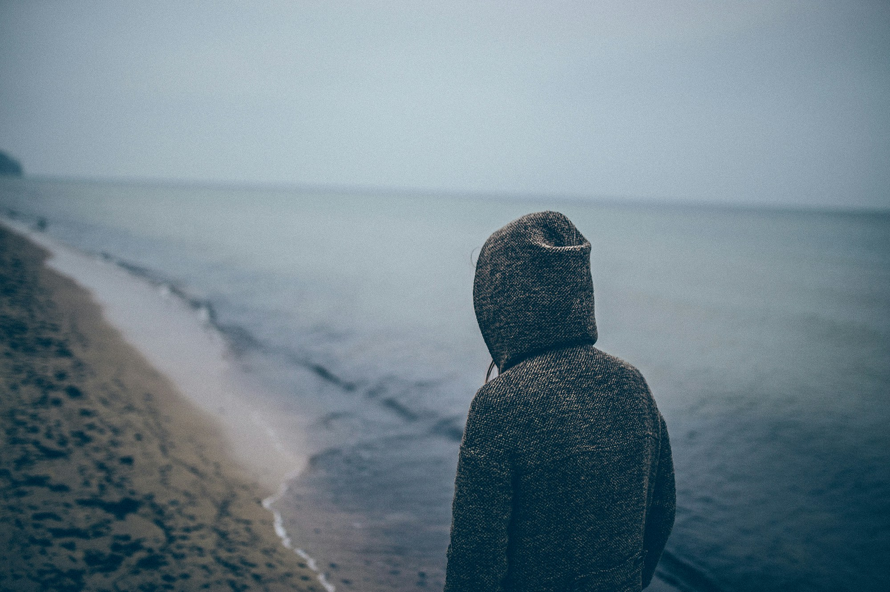
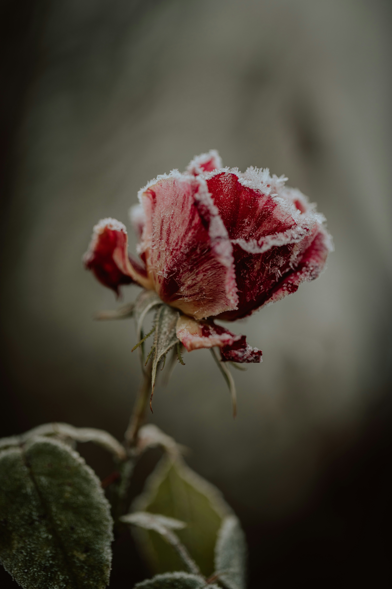
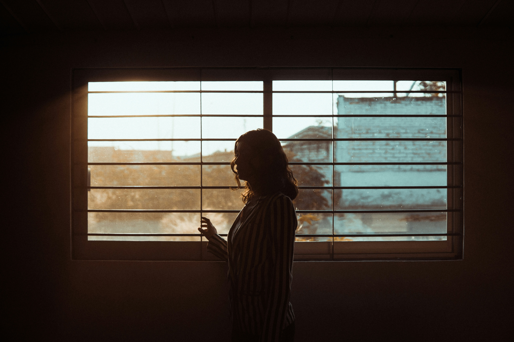

Hi ~
I have been trying to write something to you, but I have been so busy with work and other things, but I have finally finished. I may say something very stupid, or even doesn't make sense, please forgive me. Welcome to an over-thinker’s mind.
1

Lately, I have been thinking:
What went wrong between us? Perhaps one event, one small action of mine will set off that fragile nuclear chain reaction. Everything blows up and once beautiful landscape is annihilated. Why did you like me at the first place, the bracelet, the sweet words, the flower, the kissing… Once a familiar face starts to fade away from my memory, Once a familiar voice start to disappear from my mind. We are now like two strangers who barely talk with each other.
Maybe long ago you have mentally checked out, and you are scared of hurting my feelings. You told me that you don’t want to lose me, I was happy. You told me that you want to be friend with me because you can tell your friends everything. But you are becoming more and more distant. You told me that you also want me more than a friends. But It seems like you are running away and I just never give up chasing. Perhaps you are running away because you don’t know how to stop me... But I ain’t a monster, i just want to show you that you are not alone.
2

Sometimes I hate instagram, it always shows me relationship advices. They told me that if a man care too much for a woman, she will go away. They told me that women and children are loved unconditionally, but man are loved conditionally. They told me that a man will put his happiness aside for his women, but a woman will put her man aside for her happiness. They told me man are more romantic than women, and women are more realistic than man..., But, I don’t want to believe in all of that, I choose not to, I believe that I don’t have to, I refuse to accept it, because I believe in the beauty of love.
I feel sad, because I have been fighting so hard to keep the people that is important to me in my life. But, I barely have seen anyone who fights hard to keep me in their life, or maybe I just too blind to see them. If I am sad, having a bad day, I always remembered that no one really cares about me, do you care about me the same way I care about you? If I am alone and hurt, I reach out to those who I love to find safety and peace. No painkiller is good enough than those who cares about us...
Man are not emotionless, we feel so deeply, but we just don’t show it, we are all dying inside. We are not always strong, we get hurts so easily, but we were taught to act strong for those who count on us, we are all rotting inside. I may seem quiet and peaceful on the outside, but I am having fiery battle on the inside. I may look serious on the face, but in my heart it is filled with tears. I enjoy being alone by the ocean, it makes me feel tranquility, the fierce waves of the sea washes away my anxieties and rage. I like being on the adventure, it makes me feel that the world can’t control me, my fate is in my hand.
3

I am sorry for still having feelings for you as more than a friend. Do you remember when I told you, if I ever said I love you, I will be so sure that I actually do and be ready for all the accountability that comes with it. It means that I will fight for you and your happiness until the day your heart is asking me to leave. I don’t like saying words and the action proves otherwise, it felt like lying to myself. Do you remember the ice flower, you told me that it means that all of our feelings are frozen for that one person. Are your feelings frozen for me? I dropped some tears a few days ago when I smelt a similar scent that you used on yourself, I guess you will never know if I don’t tell you. Am I weak or am I just being sensitive.
You might wonder, why am I so stubborn, am I that desperate and pathetic. Well, I have no rights to force you to think something else. Perhaps the world doesn’t understand what it takes to have the courage to be stubborn. I don’t like giving up, not even on myself, if you ask why I am normal and has no traumas or mental issues, that is why. I have suffered and stood up over and over again. I understand how hard it is to feel helpless, lonely, dead inside. I feel the deep frustration of believing that life is a living hell. Many years ago, I told myself in tears and despair… If no one wants to care for me, well, I will be the one who care for others, especially those special person in my life. if no one wants to understand me, I will be the one who tries to understand. Because, I know the pain, the torture. I can’t stand watching the people I love burns.
4

If I hurt you or upset you, please tell me so that I can learn how to treat you the right way. if you have doubts, you can ask me, it is not always your problem. I miss calling you at night as a friend, It is a good feelings to laugh with you and play games with you, or even vent about anything that upsets us. Do you still remember how we used to be? Even before everything happened. Do you remember the night that you had a nightmare that you killed people, and I told you to kill me in your dream... Do you remember the first time we hung out, we struggled trying to find the pay station… We shared so much, and if you are willing to, you still don’t know the full me :)
I believe that to have a friend who is also more than a friend is “friends with benefits”, “no strings attached”. But, to have someone more than a friends who is also a friend is “long-lasting love”. Perhaps the first is what you want, or maybe you don’t know what you want. it is okay, I understand how busy you are, how deeply depressed and stressed you are, it is even hard to understand yourself. But, I will be here, you know where to find me.
5
At this point you maybe asking, angrily “What the hell do you want from me? I am so tired of this”. Well, the answer is: “nothing” and I am sorry. if you wonder why I am like this, it is because of a mix of love, kindness, accountability and commitment. I know myself well, and I only wish you the best…“All of the stars are fading away. Just try not to worry, you'll see them someday. Take what you need, and be on your way. And stop crying your heart out. Don’t be scared.”
May all the tears we had become burning strength
May all the deaths of hearts become the loving souls
Your Friend, Linyun
LINYUN
MAY 18TH, 2024